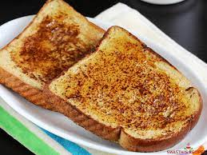

French Toast

Description
French toast is a dish made of sliced bread soaked in beaten eggs and typically milk, then pan fried. Alternative names and variants include "eggy bread",[1] "Bombay toast", "gypsy toast",[2] and "poor knights" (of Windsor).[3]
When French toast is served as a sweet dish, milk, sugar, vanilla or cinnamon are also commonly added before pan-frying, and then it may be topped with sugar (often powdered sugar), butter, fruit, or syrup. When it is a savory dish, it is generally fried with a pinch of salt or pepper, and it can then be served with a sauce such as ketchup or mayonnaise.[4][5][6][7]
Ingredients
- 4 slices bread
- 1 egg (optional)
- 1/2 teaspoon cinnamon powder
- 1 tablespoon olive oil
- 1 tablespoon butter
- 1-2 cups milk
Steps
- Cut the bread slices diagonally in half.
- In a deep bowl, pour in milk
- Crack the egg into the milk and beat the mixture until the egg had been fully incorporated. Skip this step if you are not using eggs.
- If you use sugar, you may already dissolve it into the liquid ingredients.
- Add oil and butter into the frying panand heat it until very hot. Oil and butter will prevent the butter from burning too soon and enhance the flavor.
- Very carefully, place 4 slices of bread into the hot oil.
- Sprinkle cinnamon and serve.